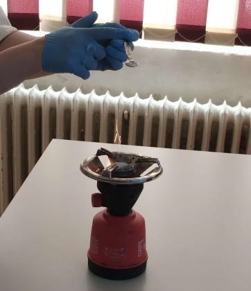
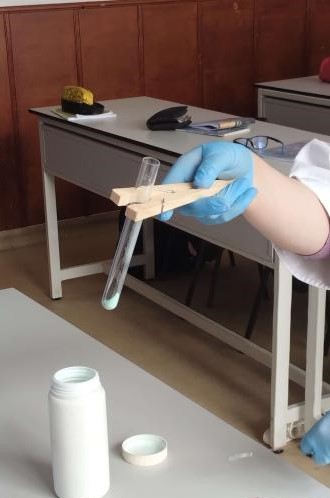
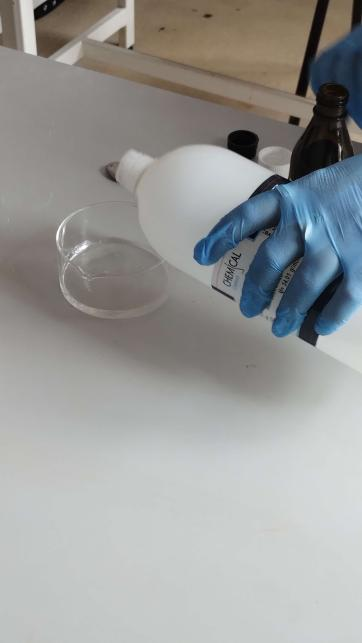
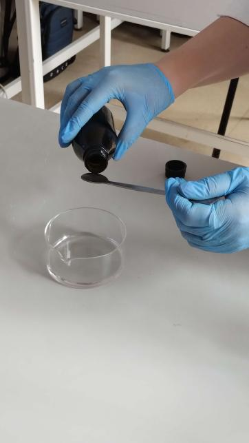
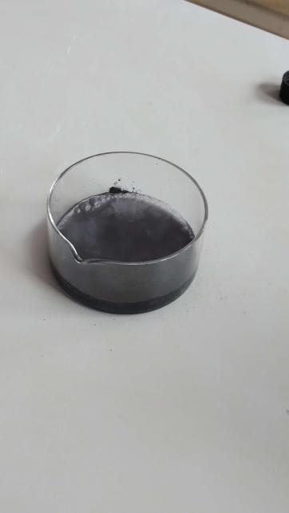
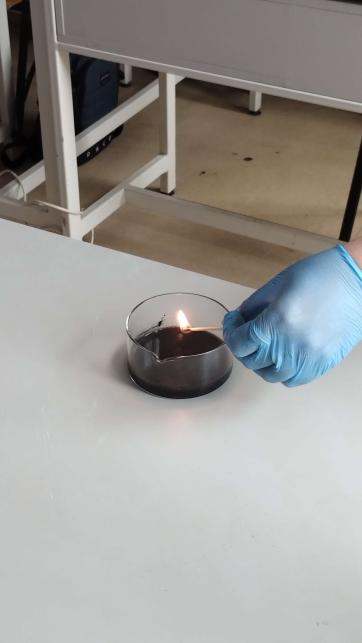
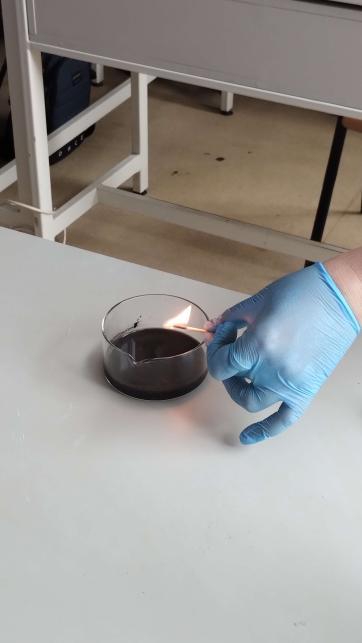

Ce e reacția de combinare?
Cum se numește reacția chimică in care unul sau mai mulți reactanți se unesc într-un singur produs de reacție? În reacțiile de combinare, reactanții pot fi:
Reacția de combinare este reacția chimică în care doi sau mai mulți reactanți se unesc formând un singur produs de reacție. Reactanții pot fi substanțe
simple sau substanțe compuse, iar produșii de reacție sunt substanțe compuse.
Se folosește la obținerea unor substanțe chimice esențiale pentru industrie și viața de toate zilele.
Câteva exemple sunt:
-varul stins, care este capabil să protejeze suprafața plantelor de umezeală, având de asemenea și efect dezinfectant;
-amoniacul, care este folosit în curățarea pardoselilor si mobilei de lemn,îndepartarea grăsimilor și se află în componența îngrășămintelor agricole;
-acid clorhidric, care se utilizează în industriile coloranților, medicamentelor si textilelor.
Arderea unei substanțe sau a unui amestec de substanțe este o reacție chimică exotermă însoțită de degajare de căldură și,
uneori, și de lumină.
Metalele reacționează cu oxigenul și formează oxizii metalici corespunzători. La arderea magneziului, acesta se aprinde și arde cu o flacără extrem de strălucitoare. În urma arderii se obține o pulbere albă, obținându-se oxid de magneziu. La arderea aluminiului, sub formă de pulbere, acesta arde cu scântei strălucitoare. La finalul arderii se obține un praf alb, adică oxid de aluminiu.
Metal + O2 → oxid de metal
Sub flacără, cuprul se combină cu oxigenul din aer si formează oxid de cupru II, de culoare neagră. Cuprul începe să se
înnegrească și arde cu o flacără verde specifică acestuia.
2Cu + O2 = 2CuO (Oxid de cupru II)
Experimente:
2Mg + O2 = 2MgO (Oxid de magneziu)

4Al + 3O2 = 2Al2O3 (Oxid de aluminiu)
Reacția de ardere este o reacție:
-exotermă -endotermăÎn reacția de ardere, reactanții formează oxizii corespunzători cu ajutorul:
-hidrogenului -apei -oxigenului -heliuluiLa arderea magneziului se produce:
-o flacără orbitoare -o flacără de culoare verde -un acid -o soluție incolorăDin ecuația 2Cu + O2 se obține:
-Cu2O -2CuO -O2Cu -CuO2
Nemetalele reacționează cu oxigenul și formează oxizii nemetalici corespunzători. La arderea completă a carbonului se obține: Reacțiile reversibile sunt: La arderea pulberei de sulf se obține: Din ecuația 2H2 + O2 se obține:
Nemetal + O2 → oxid de nemetal
Reacțiile reverzibile sunt reacțiile, care în anumite condiții, au loc în ambele sensuri de reacție, atât în sensul formării
produșilor de reacție, cât și a reactanților, până se ajunge într-un punct de echilibru în care concentrațiile reactanților și
produșilor nu se vor mai schimba.
CO2 + H2O ⇄ H2CO3
Carbonul se aprinde în oxigen și arde cu scântei. Formează dioxidul de carbon, un gaz incolor, care nu întreține arderea
chibritului.
C + O2 = CO2↑ (Dioxid de carbon) (reacția de ardere completă a carbonului)
2C + O2 = 2CO↑ (Monoxid de carbon) (reacția de ardere incompletă a carbonului)
Pulberea de sulf arde și formează un gaz albicios, cu miros înecăcios, rezultând dioxid de sulf.
S + O2 = SO2 (Dioxid de sulf)
-Reacțiile care au ca rezultat un oxid
-Reacțiile care au loc în ambele sensuri de reacție
-Reacțiile în care rezultantul se descompune
-Reacțiile cu produs de reacție incolor
Metalele reacționează cu clorul, un halogen, și formează săruri numite cloruri. Cu ce halogen reacționeză metalele pentru a forma cloruri: Rezultanții reacțiilor metalelor cu halogenii sunt: Toți rezultanții sunt:
Metal + Cl2 → clorură de metal
Toți rezultanții sunt substanțe compuse, din categoria sărurilor provenite de la un hidracid.
Prin ardere, hidrogenul se combină cu oxigenul și formează apă. Prin arderea hidrogenului se obține: Hidrogenul se combină cu aproape toate nemetalele: Din ecuația H2 + Cl2 se obține:
Hidrogenul se combină aproape cu toate nemetalele la cald.
Hidrogenul se combină și cu alte nemetale, clor, sulf, azot și formează compușii corespunzători:
- acidul clorhidric – HCl,
- acidul sulfhidric – H2S,
- amoniacul – NH3.
Ce e reacția de descompunere?
Fenomenul chimic prin care un reactant se transformă în doi sau mai mulți produși de reacție se numește: Care dintre acești stimuli exteriori NU ajută la descompunerea substanțelor:
Fenomenul chimic prin care un reactant se transformă în doi sau mai mulți produși de reacție se numește reacție de descompunere.
Descompunerea substanțelor se realizează sub acțiunea unor stimuli energetici exteriori: curent electric, temperatură, lumină.
În reacția de descompunere reactantul este o substanță compusă ,iar produșii de reacție pot fi atât substanțe simple, cât și substanțe
compuse.
Este necesară pentru obținerea unor substanțe chimice importante, cum ar fi calcarul,
reacția căruia are loc într-un cuptor de var la temperatură ridicată.
De asemenea, descompunerea cloratului de potasiu se folosește pentru obținerea oxigenului în laborator.
Aceasta este o substanță care se foloseste la prepararea prafului de pușcă.
Reacția are loc și la dezinfectarea rănilor, substanța dezinfectantă fiind oxigenul care se degajă.
Descompunerea unor carbonați Experiment: Carbonatul de cupru este o substanță solidă, de culoare verde CuCO3 → CuO + CO2↑ Prin reacția de descompunere la încălzire a unor carbonați se obține: La descompunerea reactantului CaCO3 se obține:
Printr-o reacție de descompunere la încălzire, unii carbonați se transformă în oxizii metalici corespunzători și dioxid de carbon.
Carbonat metalic → oxid metalic + dioxid de carbon
Carbonatul de cupru se descompune la flacără formând oxid de cupru II – CuO, de culoare neagră și dioxid de carbon – CO2, care
stinge flacăra

În urma arderii se obține oxid de cupru, o substanță de culoare neagră, și dioxid de carbon
-Dioxid de carbon
-Oxid metalic corespunzător si dioxid de carbon
-Monoxid de carbon
-Oxid metalic corespunzător
Unii hidroxizi se descompun la încălzire și se transformă în oxizii metalici corespunzători și apă. Prin reacția de descompunere la încălzire a unor hidroxizi se obține: Hidroxidul de cupru se descompune la căldură formând:
Hidroxid → oxid de metal + apă
Hidroxidul de cupru se descompune la căldură și formează oxidul de cupru II – CuO, de culoare neagră
și vapori de apă – H2O, care se condensează pe pereții paharului în care a fost pus.
-Apă oxigenată
-Oxid metalic corespunzător si apă
-Oxid metalic corespunzător si apă oxigenată
-Dioxid metalic corespunzător si apă
Apa oxigenată este o substanță compusă, cu formula chimică H2O2. Experiment: Apa oxigenată este un lichid incolor Ce este un catalizator: În prezența cărui catalizator apa oxigenată se descompune formând apă și oxigen?
Apa oxigenată, în prezența catalizatorului (MnO2), se descompune și formează apă – H2O și oxigen – O2.
H2O2 → H2O + O2↑
Oxigenul degajat la descompunerea ei, la lumină, distruge microbii și decolorează sângele de pe o rană sau în
cosmetică, la decolorarea părului.
Catalizatorul este substanța care mărește viteza de desfășurare a unei reacții chimice, regăsindu-se
neschimbată la finalul acesteia.
Apa oxigenată se descompune mai repede în prezența dioxidului de mangan, care are rol de catalizator.

În prezența dioxidului de mangan, apa oxigenată se descompune mai rapid în apă și oxigen


2H2O2 → 2H2O + O2↑
Descompunerea apei oxigenate eliberează oxigen, deci întreține arderea


-Subsțanta care împiedică viteza de desfășurare a unei reacții
-Subsțanta cu care reacționează un reactant
-Subsțanta care se degajă la finalul reacției
-Subsțanta care mărește viteza de desfășurare a unei reacții
Unele substanțe produse prin ardere pot avea efect negativ asupra mediului și corpului uman
-Dioxidul de carbon:
Principala cauză a încălzirii globale, acumulându-se în atmosferă cantități prea mari, care depășesc capacitatea plantelor de a-l fixa prin fotosinteză.
-Monoxidul de carbon:
Toxic și letal în concentrații mari;
Reduce capacitatea sistemului circulator de a transporta oxigenul la țesuturi;
Produce boli cardiovasculare.
-Dioxidul de sulf:
Iritant pentru căile respiratorii;
Se oxidează la SO3, care se combină cu vaporii de apă din atmosferă și produce acidul sulfuric, H2SO4, principala cauză a ploii acide.
-Monoxidul de azot:
Smog fotochimic;
Efect de seră;
Afectează aparatul respirator.
Ce e reacția de descompunere?
Fenomenul chimic prin care doi reactanti se transforma intr-un produs de reactie
Fenomenul chimic prin care un reactant se evapora la caldura
Fenomenul chimic prin care un reactant se transformă în doi sau mai mulți produși de reacție
Fenomenul chimic prin care doi reactanti se neutralizeazaLa arderea magneziului se produce:
o soluție incoloră o flacără de culoare verde un acid o flacără orbitoareDin ecuația H2 + Cl2 se obține:
2HCl H2Cl2 HCl2 H2ClReacția de ardere este o reacție:
exotermă endotermăCare dintre acești stimuli exteriori NU ajută la descompunerea substanțelor:
Lumina Presiunea Curentul electric TemperaturaÎn prezența cărui catalizator apa oxigenată se descompune formând apă și oxigen?
Clorură de aluminiu Dioxid de siliciu Dioxid de mangan Dioxid de magneziuHidrogenul se combină cu aproape toate nemetalele:
Substanțe simple Substanțe compuse Substanțe compuse sau simpleManual Chimie Clasa a VIII-a artKlett
https://www.fizichim.ro/
https://ro.scribd.com/
Site realizat de:
-Irimia-Sorici Andrei
-Oblîncescu Emanuel Ionuț
clasa a IX-a C
Liceul Teoretic "Miron Costin" Pașcani
Profesori coordonatori:
-Cornea Elena
-Coșniță Emilia Felicia